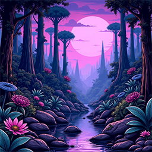
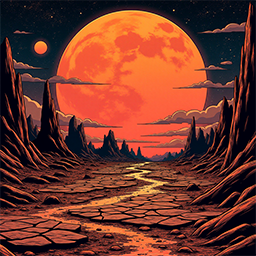
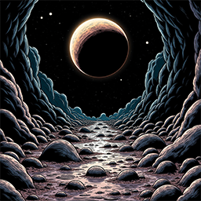
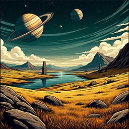
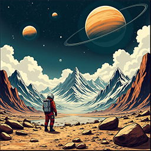

- Copy/Module - (3) - Copy/Module3_Practice/images/banner.png)
Planets - Project Astra
Exploration and Research
Following its formation in the early 1950s under deep secrecy, Project Astra quickly pivoted from orbit-focused research to a more ambitious goal: interplanetary—and eventually interstellar—exploration. While the public space programs of the era competed to touch the stars, Astra quietly built the infrastructure to go far beyond. Using breakthrough propulsion methods developed by scientists whose work was considered "too speculative" for mainstream agencies, Project Astra launched the Planetary Reconnaissance Initiative—a mission to identify and explore habitable or resource-rich worlds far from Earth.
By the early 1960s, the first autonomous probes were launched from a hidden facility beneath the Nevada desert. These probes, equipped with early artificial intelligence and long-range jump drives, scouted dozens of star systems and returned staggering results. Seven planets stood out—each one strange, beautiful, and utterly unique. Unlike the gray, barren expectations of most scientists, these worlds offered jungles, oceans, alien technology, and even microbial life. Project Astra’s charter expanded rapidly to include deep-surface missions, biological containment labs, and multi-year research stations hidden in the most remote corners of space.
The exploration of these worlds wasn’t just about discovery—it was about preparation. Project Astra’s long-term goal has always been to find sustainable habitats in the event Earth becomes uninhabitable, whether from environmental collapse or Cold War escalation. Each world discovered brought humanity one step closer to understanding its place in the cosmos and building a legacy that could outlast the stars themselves. These planets became more than targets for research—they became hope.
1. Virelia

A lush, violet-hued jungle world teeming with bioluminescent flora and towering spire-trees. Virelia’s dense atmosphere and high oxygen levels support a complex ecosystem of amphibious creatures. Scientists believe its flora may hold medicinal properties unknown on Earth.
2.Caldris-7

A scorched desert planet with shattered obsidian plains and deep fissures emitting geothermal energy. Caldris-7 is rich in rare minerals and radioactive elements, making it a high-risk, high-reward site for energy research and mining missions.
3. Lumaqua
An ocean world with almost no dry land, Lumaqua is covered in endless turquoise seas with powerful, glowing storms. Floating colonies were established to study the planet’s strange magnetic field and its massive, transparent aquatic lifeforms.
4. Tarsis Beta
A frigid tundra planet with crystal-covered landscapes and long, dark winters. Though the surface is harsh and nearly lifeless, underground ice caves contain traces of microbial organisms and preserved alien ruins, hinting at a once-advanced civilization.
5. Echronis

A rogue planet drifting without a sun, Echronis is in constant darkness, heated only by its radioactive core. Project Astra’s subterranean exploration revealed bizarre silicon-based lifeforms thriving in total blackness, raising questions about life’s adaptability.
6. Seren V

Known for its breathtaking rings and stable climate, Seren V has rolling hills of golden grass and vast freshwater lakes. Considered for long-term colonization, it’s also home to ancient monoliths that may be remnants of an extinct alien culture.
7. Xanthe Prime

A high-gravity super-Earth with massive mountain ranges and dense atmosphere. Explorers use exosuits to navigate the terrain and study its unique tectonic activity, which causes frequent "skyquakes" – shockwaves that ripple through the air.